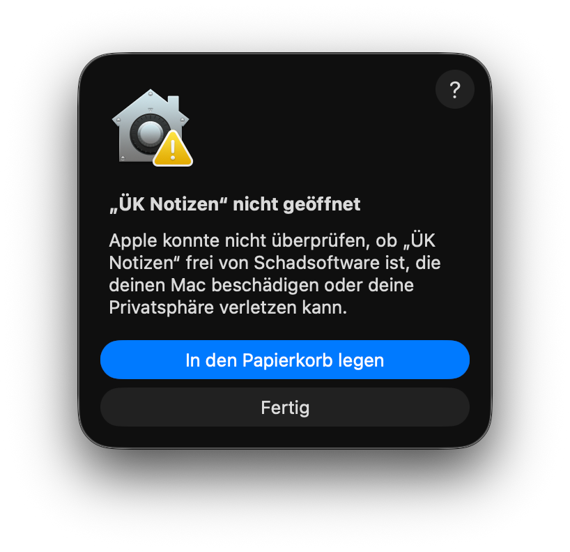

DMG öffnen und App installieren
Öffne UEK-Notizen-macOS.dmg und ziehe ÜK Notizen in den Ordner Programme.
Die App ist nicht mit einem kostenpflichtigen Apple-Developer-Zertifikat notarisiert. Deshalb kann macOS beim ersten Start einen Sicherheitsdialog anzeigen. Danach startet die App normal.
Öffne UEK-Notizen-macOS.dmg und ziehe ÜK Notizen in den Ordner Programme.
Falls macOS die App blockiert, öffne im Finder den Programme-Ordner, mache einen Rechtsklick auf ÜK Notizen und wähle Öffnen.

xattr -cr für die App aus.